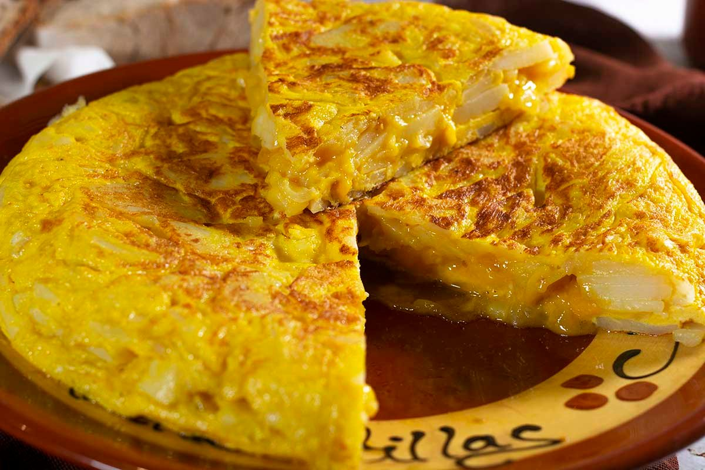
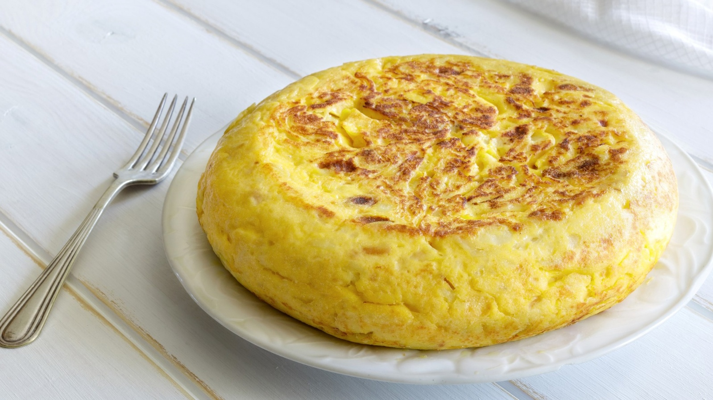
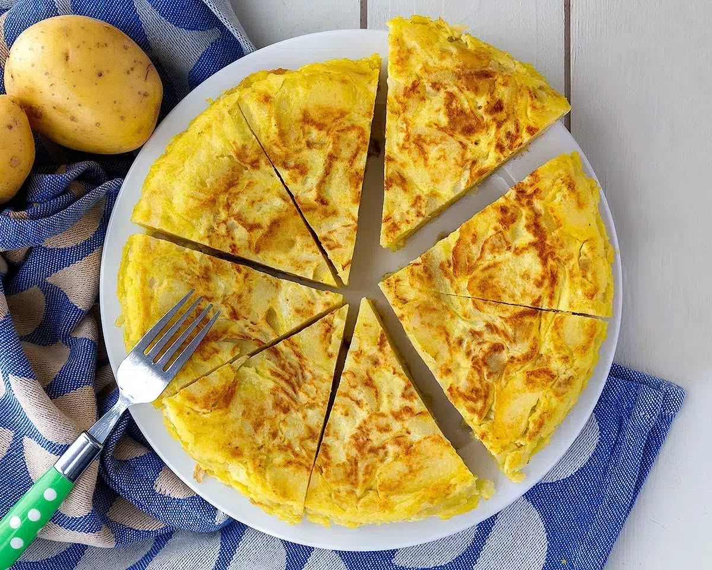

I španělská společnost je těžce rozdělená na dva nesmiřitelné tábory: tortilla s nebo bez cibule? Toť zásadní otázka každého pořádného Španěla.
Já mám radši tu s cibulí, protože v tortille je neskutečně jemná a sladká. Ale přenesu přes srdce i to, když si někdo dovolí ji nepřidat. 😃
Suroviny (4 porce)
- 5–6 větších brambor
- 1 střední cibule (volitelná… ale víme své 😉)
- 6 vajec
- kvalitní olivový olej
- sůl
Postup
- Brambory oloupejte a nakrájejte na tenké plátky nebo půlkolečka. Ne na kostky — tortilla má být jemná.
- Na pánvi rozehřejte dostatek olivového oleje a brambory smažte pomalu, na středním až mírném ohni. Nemají křupat, mají změknout a lehce se „konfitovat".
- Pokud jste tým „s cibulí", přidejte ji nakrájenou na tenké proužky zhruba v polovině smažení a nechte zesládnout.
- Hotové brambory (a cibuli) sceďte — olej si klidně schovejte na další vaření.
- V míse rozšlehejte vejce se solí a ještě teplé brambory do nich vmíchejte. Nechte pár minut odpočinout, aby se chutě propojily.
- Směs vlijte na lehce vymazanou pánev a opékejte několik minut z jedné strany.
- Pomocí talíře tortillu obraťte a dopečte z druhé strany.
Uvnitř může zůstat lehce vláčná — tak ji mají rádi mnozí Španělé. Pokud preferujete pevnější, nechte ji na ohni o chvíli déle.
Podává se vlažná. A ideálně ve společnosti, kde se o cibuli diskutuje s úsměvem. 🙂


